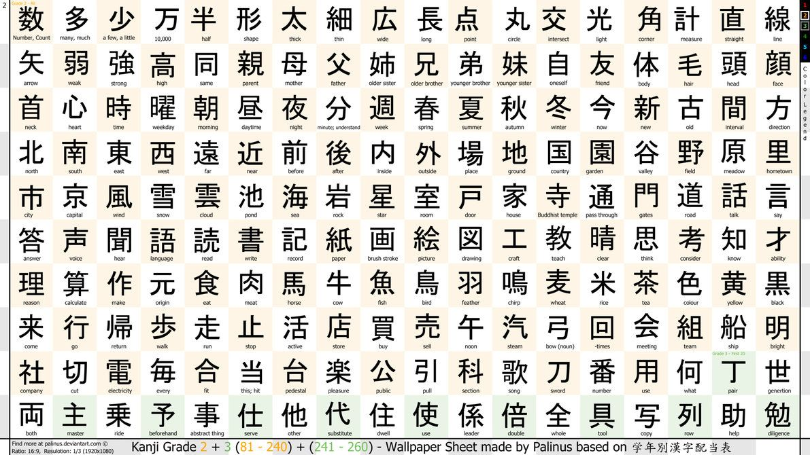

Learn about the Kanji characters and their pronunciation. Here are some examples:
Kanji Overview
Basic Characters: Kanji is a logographic writing system originating from Chinese characters. It consists of thousands of characters, each representing a word or a meaningful unit of meaning. In Japanese, there are commonly used characters, and learning them is essential for literacy.
Complex Characters: Kanji characters can be intricate and are often composed of strokes. The stroke order is important when writing kanji and contributes to its proper formation.
Meaning and Pronunciation: Each kanji character can have multiple readings, including on'yomi (Chinese-derived readings) and kun'yomi (native Japanese readings). The meaning of a kanji character can vary based on context.
Usage in Japanese: Kanji is extensively used in Japanese writing, appearing in newspapers, books, and formal documents. It helps convey nuanced meanings and reduces ambiguity compared to purely phonetic scripts like hiragana and katakana.
Radicals: Kanji characters are often categorized by radicals, which are smaller components that convey meaning or serve as a phonetic indicator. Understanding radicals aids in the learning and lookup of kanji characters.
Learning Journey: Learning kanji is a gradual process. Beginners often start with basic characters and progress to more complex ones. There are resources such as textbooks, flashcards, and online tools to assist in kanji learning.
Proficiency Levels: The Japanese education system and language proficiency exams classify kanji characters into different proficiency levels, such as JLPT (Japanese Language Proficiency Test) levels, to gauge a learner's mastery of kanji.
Artistic Expressions: Kanji characters are not only functional but are also appreciated for their aesthetic qualities. They are used in calligraphy, traditional art, and contemporary design to convey visual and symbolic meanings.
Kanji, along with hiragana and katakana, forms the three writing systems of the Japanese language. Mastery of kanji is an ongoing journey for learners, and it plays a pivotal role in understanding and expressing ideas in written Japanese.